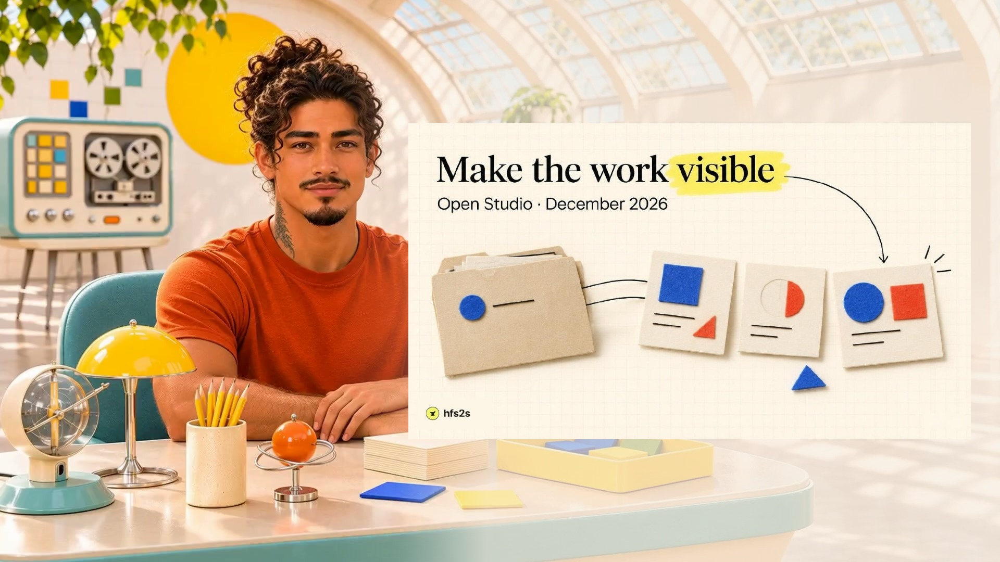

Keep faces nearly front-facing
Avoid large or sharp head turns, profile views and hidden eyes or lips. Use the eyes first for a glance. Entrance and exit can include the turn needed to walk, with seated frames facing the lens.
Framing, reactions, and production specifications for Stage agents, illustrated with Juan’s studio.
Encourage light, natural head movement whenever the agent is on screen. Small shifts, tilts and blinks keep the performance alive.
Avoid large or sharp head turns, profile views and hidden eyes or lips. Use the eyes first for a glance. Entrance and exit can include the turn needed to walk, with seated frames facing the lens.
Allow shallow, barely visible breathing. Reject gasps, sighs, conspicuous chest or shoulder lifts, and open-mouth breaths. Keep lips gently closed in seated takes prepared for lip sync.
Keep hair, clothing, plants and loose paper steady. Reject visible wind or drafts, audible breath and air noise. Export a silent clip with no audio track.
A translucent overlay gives slides, sketches and photos a quiet surface while letting the studio show through.

Full-width frames from the existing Stage takes.
Start at x = 640 in the master frame. Fade in from the left, keep the full height translucent, and inset the content so the room shows around it. Keep the area behind the content clear of people and moving props.
Keep the face, hands and working area at least 2% of the frame width left of the overlay. In the presenting take, turn the palm toward the screen and hold for two seconds within the left third.
Use the same overlay position for the seated, empty-room and writing keyframes. At wide, square and phone widths, keep the whole room visible and scale the media to fit.
Ten silent takes from the live Stage and one production reference for active listening. Use these movements and pose transitions when planning a new Stage.
Use between cues. Keep head movement minimal, with natural blinks and barely visible breathing. Return to the same seated pose.
MP4Use while someone else speaks. Add more visible head movement than in quiet idle, with small shifts and occasional acknowledgment nods.
MP4Make a silent 15-second shot at natural speed with a locked camera. Use the same approved seated keyframe at both ends. Keep the agent nearly front-facing, eyes near the lens, forearms supported and lips gently closed. Keep breathing shallow and the room air still.
Use as the base video while the agent speaks. The source video is silent with closed lips. Live lip sync supplies the mouth movement.
MP4Start and finish on the approved seated frame. Use natural blinks and gentle head shifts through the middle. Keep the face nearly front-facing, mouth visible, jaw relaxed and lips together so the lip-sync layer can track the face throughout. Keep the breathing quiet and the room air still.
Choose the setting, wardrobe and screen side before making keyframes. Use the reference take names and durations for each agent.
Approve the seated portrait with the screen area marked. Derive the empty room and writing pose from that image. Lock the camera, crop, lighting and props. Specify one observable action per take and the opening and closing pose. Entrance and exit happen on the agent’s side of the frame.
Generate each take with image-to-video from its approved opening and closing frames. Supply the same frame at both ends of a loop. Use the seated frame where seated clips meet and the writing frame to join the three writing takes. Keep lips closed in seated takes prepared for lip sync. Return to the seated pose before speech begins after writing.
Use silent 1920 × 1080 H.264 MP4 at 24 fps. Keep the approved keyframes, motion directions, take versions and generation receipts with the exports. Record the frame coordinates of the screen and palm, and the time windows for gesture holds.
Check each take at full speed and inspect the first and last frames side by side. Replay every loop twice. Reject large head turns, exaggerated breathing and signs of a draft. Check that the listening nods are visible, spaced apart and settle into the loop. Check screen clearance throughout each take, including entrance, exit and the full presenting gesture.